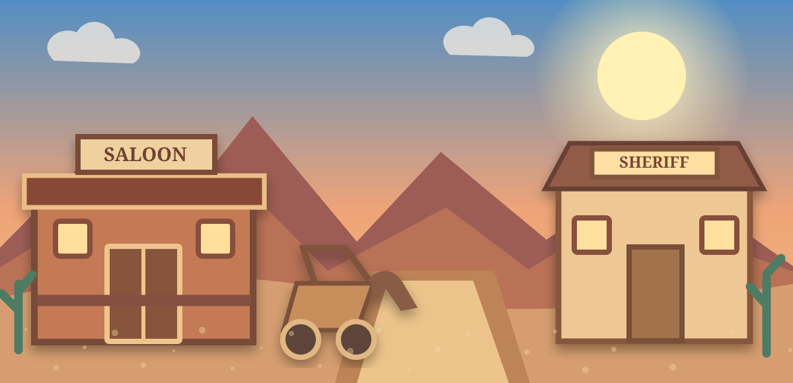

Just Wander
Stroll town, enter buildings, meet characters, and poke around.

WELCOME TO DUSTY TRAIL TERRITORY
Ride in. Explore freely. Solve mysteries. Make your own story.
DUSTY TRAIL TERRITORY
Stroll town, enter buildings, meet characters, and poke around.
Ride the rails, work the ranch, visit a ghost town, or head down the trail.
Track clues, question suspects, and crack cases around the territory.
Try frontier games, score challenges, luck rounds, and trail decisions.
Play a sheriff, rancher, journalist, bounty hunter, traveler, or saloon owner.
Explore Old West themes while separating history, legend, and movie myth.
Sit on the porch, watch town life, or do absolutely nothing.
See the latest headline, rumor, weather, notice, and odd little happenings.
TODAY IN TOWN
Three strangers stepped off, and one of them is carrying a locked metal case.
FREE-EXPLORE MODE
Nothing is required. Wander around and leave whenever you want.
DUSTY TRAIL TERRITORY
Pick a destination, travel by horse, train, or stagecoach, or stay right where you are.
OPEN TERRITORY
Choose a route when something catches your eye.
ROLE-PLAY CORRAL
Your role changes story prompts but never locks you into one path.
FRONTIER MYSTERY BUREAU
Some statements are facts, some are suspicious, and some are distractions.
SALOON GAME NIGHT
HISTORY TRAIL
FRONTIER GAZETTE
Evening Edition
Several residents insist a lantern moved through the abandoned mining settlement after midnight.
PEOPLE OF DUSTY TRAIL
Talk, help, joke, disagree, or simply move along. Relationships change gradually and never lock you into a storyline.
SHERIFF'S BOUNTY BOARD
Not every notice is about an outlaw. Some are lost property, suspicious cargo, missing people, or odd town problems.
YOUR PLACE IN THE TERRITORY
EARN A LITTLE REPUTATION
Take a job if you feel like it, or wander away.
FOLDED MAPS & OLD CLUES
Pick one when you want a longer hunt.
DUSTY TRAIL RAILROAD
Choose a destination or investigate whatever happens on the line.
NIGHT ON THE OPEN RANGE
Rest, hear a story, cook a simple trail meal, fish the creek, or just watch the sparks drift upward.
DUSTY TRAIL TRADING ROW
Buy cosmetic keepsakes, camp supplies, horse gear, and little luxuries. Nothing here is required to progress.
YOUR WESTERN IDENTITY
BETWEEN TOWNS
Ride out and see what happens.
LONG-FORM STORY CAMPAIGN
OWN A PIECE OF DUSTY TRAIL
You can own several. Each one creates rotating daily situations, not chores you must complete.
DUSTY TRAIL SCHOOLHOUSE
Drop in for a tiny challenge, historical object, spelling puzzle, geography clue, or simply read the chalkboard.
Choose any activity. Nothing here is graded.
MAIL, TELEGRAPH & PARCELS
Sort letters, deliver parcels, decode telegrams, or ignore the counter and keep wandering.
TRAVELING FRONTIER FAIR CIRCUIT
Pick a town fair and see which activities are running today.
PEOPLE HAVE LIVES HERE
Small story chapters unlock as your friendship or rivalry changes.
DUSTY TRAIL INVESTIGATION ARCHIVE
Each case remembers your current chapter and can be left unfinished.
THE TERRITORY KEEPS TIME
Advance the world when you want, or leave time exactly where it is.
HISTORY YOU CAN TOUCH
Inspect an object to learn what it can—and cannot—tell us about life in the West.
SATURDAY NIGHT AT THE PICTURE HOUSE
Choose a movie-style adventure and play the lead your way.
DUSTY TRAIL RODEO GROUNDS
Try a quick skill event, work with your trail horse, or just watch from the rail.
HOW SHOULD DUSTY TRAIL GROW?
Choose which local project you want the fictional town to work on next. These are role-play decisions, not real-world politics.
YOUR STORY SO FAR
Places, roles, keepsakes, friends, mysteries, titles, and stories collected while you wander.
BUILD YOUR OWN EPISODE
Generate an original setting, role, problem, complication, and ending choice.
LAND, SKY & TRAIL KNOWLEDGE
These are short learning stops woven into the world—not assignments.
STEP INTO AN ERA
Each stop blends real historical context with an original role-play scene. Movie legend is clearly separated from documented history.
MAIL MUST MOVE
Choose a route, manage the ride, and deliver the message. There is no real timer—you can play at your own pace.
BEYOND THE DUST
Watch the boats, take a job, follow a rumor, or simply sit by the water.
TRAIL FOOD & CAMP LIFE
Make a simple trail meal, learn where common foods came from, or play a pantry challenge.
OVERLAND TRAVEL
Choose a destination and see what happens between here and there.
ENDLESS SMALL-TOWN MYSTERIES
Every case combines a location, missing object, witness, clue, and twist.
Pull a case whenever you want a quick mystery.
AFTER THE LAMPS ARE LIT
The storefront lamps glow. A train whistle carries from far beyond town.
NO QUEST REQUIRED
Western World will suggest a few things that fit how you feel right now. You can ignore every suggestion and wander somewhere else.
SHORT ADVENTURE PACKS
Each expedition stitches together several parts of the world into one optional mini-adventure.
YOUR TERRITORY RECORD
Earn stamps simply by exploring the world your way.
No route is required and there is no penalty for skipping anything.
MAKE-BELIEVE FRONTIER FUN
Wanted for stealing the last biscuit.
REWARD: 12 jellybeansRAILROAD OPERATIONS • HANDS-ON GAME
Become the railroad dispatcher. Flip the junctions, then send the train to the station on your shipping order. Each destination needs its own combination. No countdown: take your time.
Choose a route and send your train.
Selected destination: North Ridge
Set your switches to match the order.
THE GOLD COUNTRY EXPANSION
Follow geological clues to the most promising creek bed. Every expedition reshuffles the clues, so you can read the landscape instead of guessing from a fixed answer. No timers, no penalties, and no real-money purchases.
Start an expedition to get your map and first set of clues.
The creek is peaceful today.
Expeditions: 0 · Finds: 0
INTERACTIVE FRONTIER ACTION
The courier's mailbag has been snatched! Chase the rider through the territory. Steer between three trails with the buttons or ← ↓ → arrow keys. There's no penalty if you prefer to watch the sunset instead.
Six quick turns stand between you and the stolen mailbag. Play as often as you like.
LIVE MUSIC AT THE GOLDEN SPUR
Make up a tune, or play a piano memory round with Rosa Bell. Listen to the melody and repeat it on the keys. You can use the touch buttons or keys 1–5. No time limit and no penalty for mistakes.
The room is yours. Play freely, or start a melody challenge.
Your longest melody: 0 notes · Songs learned: 0
TRAIL TROPHY CABINET
DUSTY TRAIL FOUNDERS DAY
Wander the festival. Enter a contest, listen to music, eat pie, or just people-watch.
FRONT PORCH MODE
The street is getting quiet. Somewhere down the block, a piano plays softly through an open saloon window.
MUSIC, STORIES & COMPANY
Dusty Trail Social Hall
The floorboards are polished.
No required score here—choose whatever kind of evening sounds good.